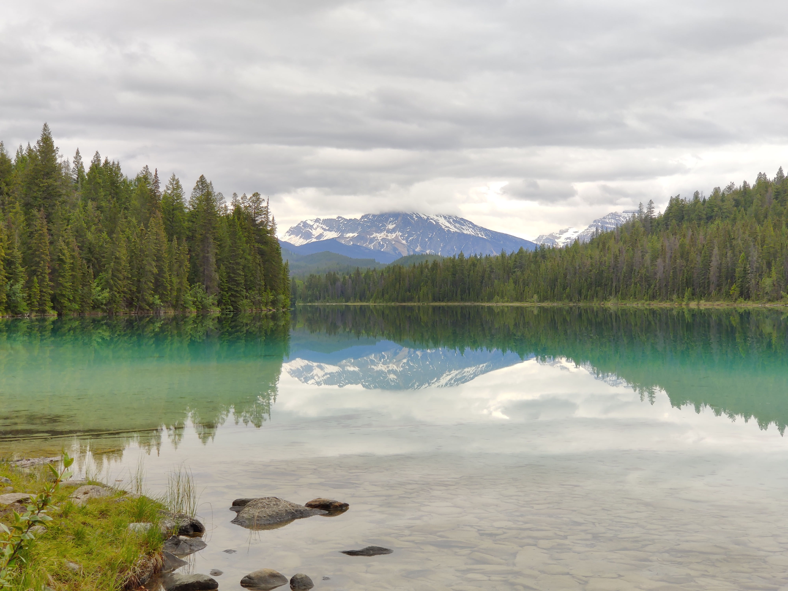
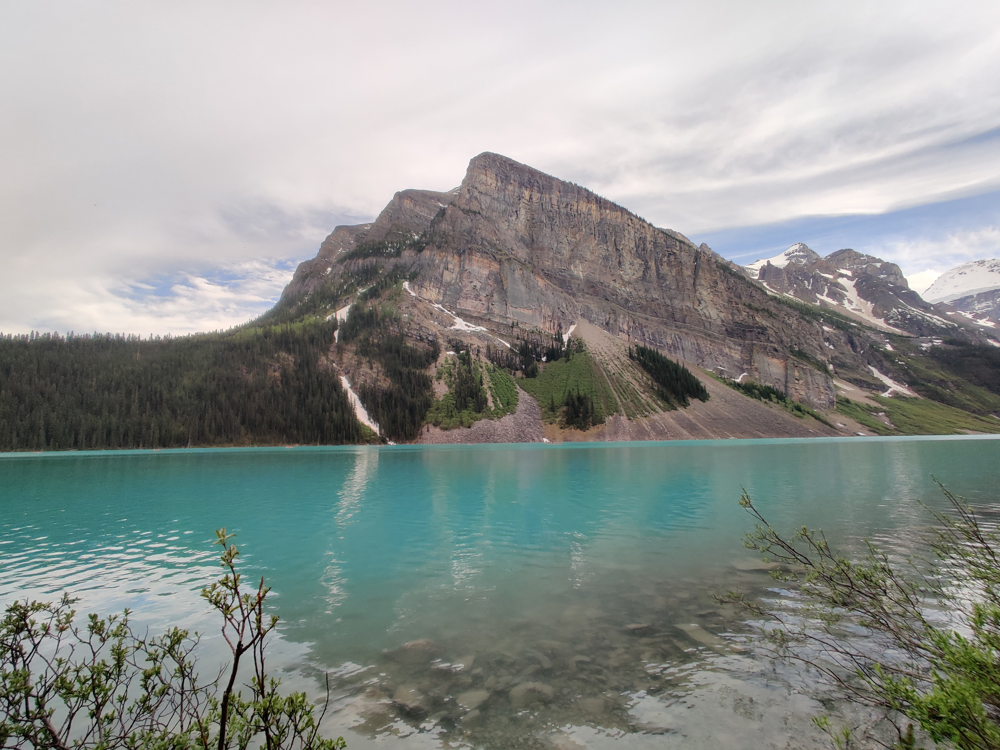

Gallery
Get inspired by Jasper's stunning sights






Jasper National Park
Explore
Jasper National Park, established in 1930, is a beautiful park located in the Canadian Rockies. Spanning over 11,000 square kilometers, it is the largest National Park in the Canadian Rockies. Its crystal clear, blue alpine lake and steep summits make a popular destination for adventurous travelers. Its vast wildlife, including bears, moose, mountain goats, bighorn sheep, and 178 species of birds, attract numerous photographers every year. With over 168 trails snaking through the park, each visitor is able to customize their own experience. View the map below to start planning your trip or view the gallery for inspiration. Please practice leave no trace when visiting the park to keep native species alive and the park thriving for generations to come.
Explore the map of Jasper National Park. Find your next adventure by scoping out trails and campgrounds.
Get inspired by Jasper's stunning sights